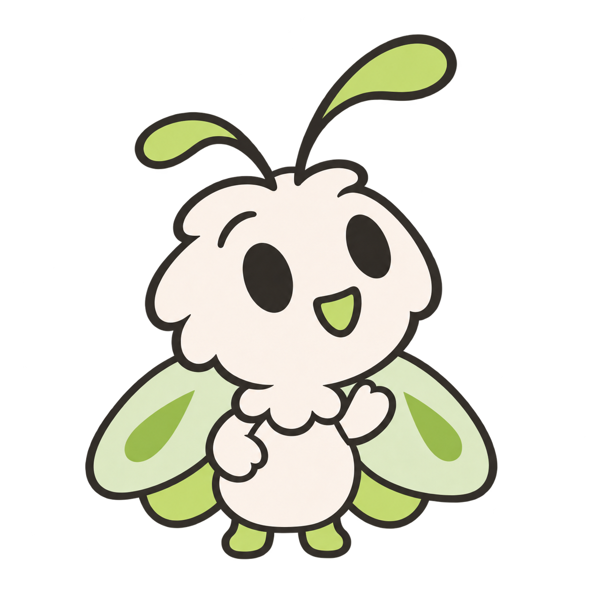
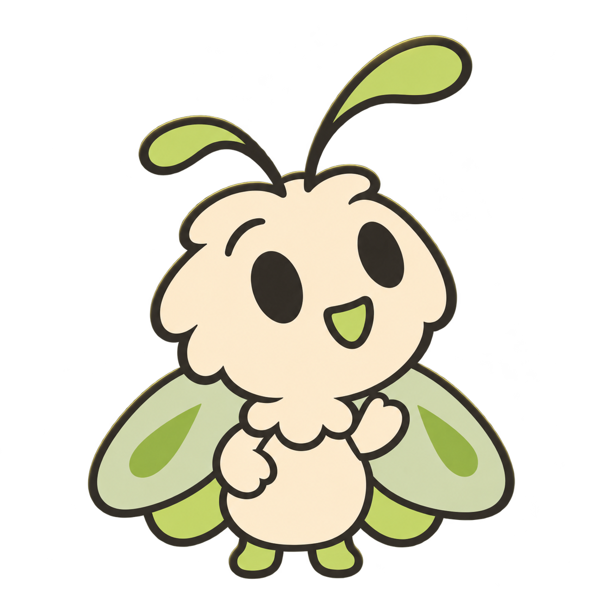
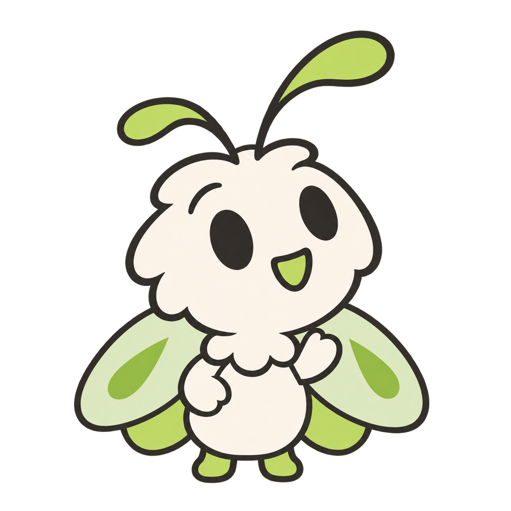

Still small.
Still curious.
A big soft head, little mittens, and feet that barely peek out. The same curious companion, in daylight and after dark.


The details that stay.
- Innocence
- A generous head and a tiny round body. No long limbs or grown-up stance.
- Character
- Unequal antennae, open oval eyes, and a little green smile.
- Wings
- Pale forewings overlap smaller green hindwings. The hand sits clearly in front.
A little smaller.
Full-body scale check · actual CSS pixels
Full-body artwork works best from 96 px. A dedicated face composition will serve tiny profile avatars.
Inspect the hand and wing refinement
Only the inner wing seam moves below the raised wrist. The hand and body stay small.
